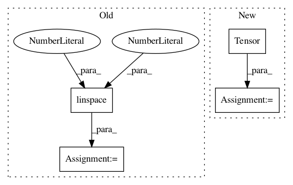

60a342edc8b501802135df44869353cc8604d838,test/lazy/kronecker_product_lazy_variable_test.py,,,#,11
Before Change
x = torch.zeros(2, 11)
x[0] = torch.linspace(0, 1, 11)
x[1] = torch.linspace(0, 0.95, 11)
x = Variable(x.t())
class Model(gpytorch.GridInducingPointModule):
After Change
from gpytorch.utils import approx_equal
a = torch.Tensor([
[4, 0, 2],
[0, 1, -1],
[2, -1, 3],
])
b = torch.Tensor([
[2, 1],
[1, 2],
])
In pattern: SUPERPATTERN
Frequency: 3
Non-data size: 4
Instances
Project Name: cornellius-gp/gpytorch
Commit Name: 60a342edc8b501802135df44869353cc8604d838
Time: 2018-01-11
Author: gpleiss@gmail.com
File Name: test/lazy/kronecker_product_lazy_variable_test.py
Class Name:
Method Name:
Project Name: cornellius-gp/gpytorch
Commit Name: 59d4a8b3bea3b5969f79b45456c8e594b617ce92
Time: 2017-11-13
Author: gpleiss@gmail.com
File Name: test/lazy/toeplitz_lazy_variable_test.py
Class Name:
Method Name:
Project Name: eriklindernoren/PyTorch-GAN
Commit Name: fc9e5824ad7bd3094f5012dc6fc3d2348481a2f4
Time: 2019-04-02
Author: eriklindernoren@live.se
File Name: implementations/bicyclegan/bicyclegan.py
Class Name:
Method Name: sample_images